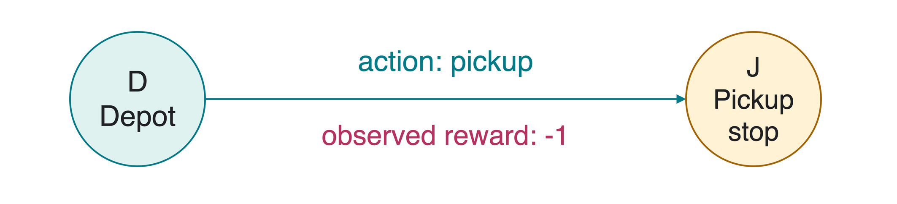
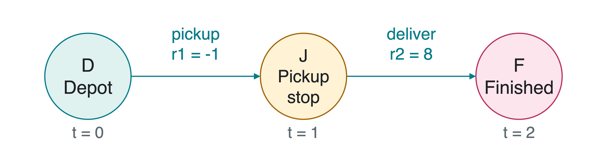
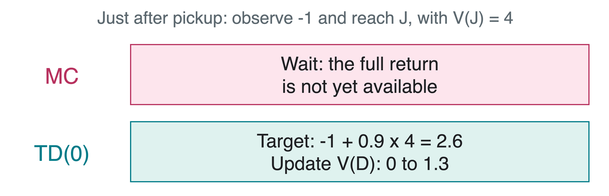
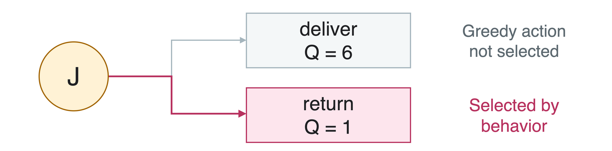
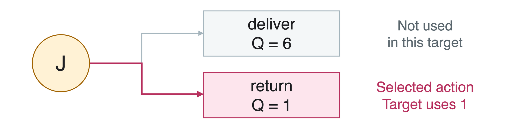
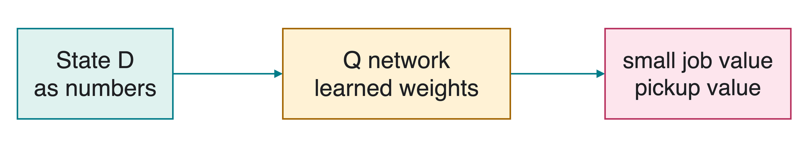
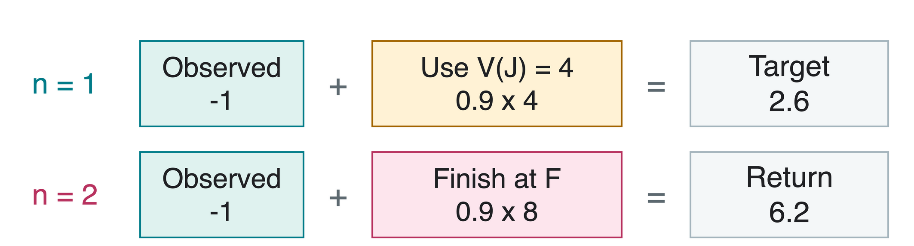
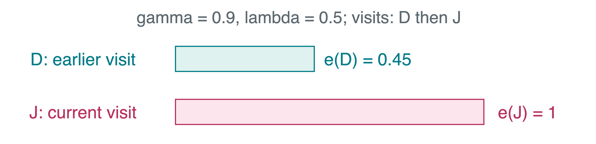

Reinforcement learning (RL) learns how to act from rewards. Model-free methods learn values or a policy without constructing an explicit transition-and-reward model.

A sample (s,a,r,s') records the current state, action, observed reward, and next state.
Learning uses these samples, not a supplied table of transition probabilities or expected rewards.
A Delivery Episode
A policy\pi is an action rule. First evaluate a fixed policy: pick up at depot D, then deliver from stop J.

An episode is one run ending at terminal state F. Its later value is zero: the task has finished.
The returnG_t totals future rewards. The discount factor\gamma weights each later reward by another factor. Use \gamma=0.9:
G_0=-1+0.9\cdot8=6.2,\qquad G_1=8.
What a State Value Predicts
The state valueV^\pi(s) is expected return when starting at s and following policy \pi:
V^\pi(s)=\mathbb E_\pi[G_t\mid s_t=s].
\mathbb E_\pi averages over outcomes under that policy. Write V(s) for the learner’s current estimate, which may be wrong.
Starting estimates for the comparison
D: depot
J: pickup stop
F: terminal
V(s)
0
4
0
Policy evaluation, also called prediction, estimates how well a given policy does. It does not yet change which actions the policy selects.
Monte Carlo: Use the Complete Return
Monte Carlo (MC) evaluation learns from complete sampled returns. Wait for the episode to end so G_t is known, then move the estimate toward it:
V(s_t)\leftarrow V(s_t)+\alpha[G_t-V(s_t)].
The learning rate\alpha controls the adjustment size. We use \alpha=0.5: move halfway toward the target.
For the completed delivery episode, G_0=6.2 and the old V(D)=0.
V(D)\leftarrow0+0.5(6.2-0)=3.1. This is one update, not the exact value after learning has finished.
Temporal-Difference Learning
Temporal-difference (TD) learning updates after a transition. Bootstrapping means using an existing estimate to help construct another estimate’s target.
For one-step TD(0), observe reward r_{t+1} and next state s_{t+1}:
Here y_t is the target and \delta_t is the TD error: target minus current estimate.
V(s_t)\leftarrow V(s_t)+\alpha\delta_t.
One observed reward plus an estimated future value lets TD learn before the episode ends. For a terminal next state, the target is just r_{t+1}.
Same Episode, Different Update Timing
Start both methods from V(D)=0, V(J)=4, V(F)=0, with \gamma=0.9 and \alpha=0.5.

When delivery then gives 8 and ends the episode:
MC: update V(D) to 3.1. TD: leave V(D)=1.3 for now. Both update V(J) to 4+0.5(8-4)=6.
TD(0): One Transition
Follow the fixed policy \pi. The environment reports whether sNext is a terminal next state.
functionTDUpdate(s, r, sNext, terminal)
ifterminal: target=r
else: target=r+gamma*V(sNext)
delta=target-V(s)
V(s) =V(s) +alpha*delta
If the robot receives 8 on entering F, should its target be 8+0.9\cdot8?
No. The target is 8. The delivery reward has already been received; V(F)=0 prevents counting it twice.
From Prediction to Control
Control improves the action rule, rather than only evaluating a fixed one. An action valueQ(s,a) estimates return after choosing a at s and following the policy being evaluated afterward.
A tabular method stores one number per state-action pair. Both methods below update toward a target y:
Q(s,a)\leftarrow Q(s,a)+\alpha[y-Q(s,a)].
At D, a small job finishes immediately; pickup goes to J. A greedy choice takes the largest current Q: if these estimates are 4 and 0, it chooses the small job.
Epsilon-greedy explores with probability \epsilon by choosing uniformly among all available actions; otherwise it is greedy.
The table is still an estimate. Exploration can collect evidence about an action whose current estimate is too low.
Behavior and Target Policies
The behavior policy generates actions. The target policy is the action rule whose return is being learned.
On-policy: learn about the same policy used to act.
Off-policy: the target policy can differ from the behavior policy.
At J, deliver finishes the job; return goes back to D. After pickup gives -1, the robot reaches J and explores by selecting return:

SARSA: Use the Selected Next Action
SARSA names the sample it uses: State, Action, Reward, State, Action, or (s,a,r,s',a'). The next action a' is the one actually selected by the behavior policy.

y=r+\gamma Q(s',a')=-1+0.9\cdot1=-0.1.
Start from Q(D,\text{pickup})=0 and \alpha=0.5:
Q(D,\text{pickup})\leftarrow0+0.5(-0.1-0)=-0.05. SARSA is on-policy: its target includes the exploratory return action.
Q-Learning: Use the Largest Next Estimate
Q-learning learns action values using a greedy target, even if behavior chooses an exploratory action. Here a' ranges over available actions at s'.
Use the same startingQ(D,\text{pickup})=0, not SARSA’s updated value:
Q(D,\text{pickup})\leftarrow0+0.5(4.4-0)=2.2. Q-learning is off-policy: its target uses deliver, although behavior chose return.
A Tabular Q-Learning Loop
Start a fresh run. Q(s) denotes the row of estimates for actions available at state s.
Q=0for every available state-action pair
for each episode
s=StartState()
whilesis not terminal
a=EpsilonGreedy(Q(s), epsilon)
(r, sNext, terminal) =Step(a)
target=r
if notterminal: target+=gamma*max(Q(sNext))
Q(s, a) +=alpha* (target-Q(s, a))
s=sNext
StartState resets the task. Step executes the chosen action and returns its reward, next state, and terminal flag.
The action used for behavior can be exploratory; the nonterminal learning target still uses the largest next estimate.
Deep Q-Networks: From Tables to Networks
A deep Q-network (DQN) replaces a Q table with a neural network Q_\theta(s,a), where \theta denotes learned weights. DQN uses Q-learning, but not all Q-learning is DQN.

Experience replay: store past transitions and train on randomly sampled batches.
Target network: a separate, periodically refreshed network supplies bootstrap estimates, helping stabilize learning.
Here n=1,2,\ldots and k indexes the rewards. At termination, stop and use no future value.

TD(0) uses n=1. More observed rewards require waiting longer.
TD-Lambda: Blend Return Horizons
TD(\lambda) mixes different return horizons. The parameter 0\leq\lambda\leq1 controls how much weight longer returns receive.
For our two-step episode, the blended target is exactly:
G_0^{(\lambda)}=(1-\lambda)\,2.6+\lambda\,6.2.
\lambda
Target in this example
Interpretation
0
2.6
One-step TD target
0.5
4.4
Equal mix of the two horizons
1
6.2
Complete episode return
The zero in TD(0) refers to \lambda=0, not to observing zero rewards. Longer episodes blend more than two horizons.
Eligibility Traces: Remember Recent States
An eligibility tracee(s) is a temporary weight tracking recent visits. It lets a new TD error adjust earlier states too.
Start traces at zero for each episode. Before each update, decay all traces by \gamma\lambda, then add 1 to the current state’s trace.

Use the current TD error \delta_t to update every state:
V(s)\leftarrow V(s)+\alpha\delta_t e(s).
Checks for a Learning Implementation
Terminal target: use only the observed final reward, not a value from the next episode.
Correct continuation: SARSA uses the selected next action; Q-learning uses the largest next estimate.
Enough exploration: an untried action can remain badly estimated, even with an off-policy method.
Learning rate:\alpha=0.5 makes our arithmetic easy; a fixed learning rate does not guarantee exact convergence in a noisy task.
Tabular Q-learning’s convergence guarantees rely on repeated state-action visits and suitable learning rates. They are not guarantees for arbitrary behavior or arbitrary neural-network updates.
Quick Check
After pickup, why can TD update V(D) while MC waits?
Behavior chooses return at J. Which next estimate do SARSA and Q-learning use: 1 or 6?
If entering F gives reward 8, what is the one-step target?
1. TD uses the observed -1 plus the current estimate for J. MC needs the episode’s complete return.
2. SARSA uses 1, for return. Q-learning uses 6, the largest next estimate, for deliver.
3. 8. There is no future return after the terminal state.
Takeaways
MC waits for complete returns; TD bootstraps after a transition.
State values evaluate a policy; action values help improve choices.
SARSA uses the selected next action; Q-learning uses a greedy target.
DQN uses a neural Q-network, experience replay, and a target network.
Multi-step returns and TD(\lambda) combine longer experience with estimates.
Eligibility traces distribute a TD error across recently visited states.
Always identify the observed reward, the estimated continuation, and the policy that continuation represents.